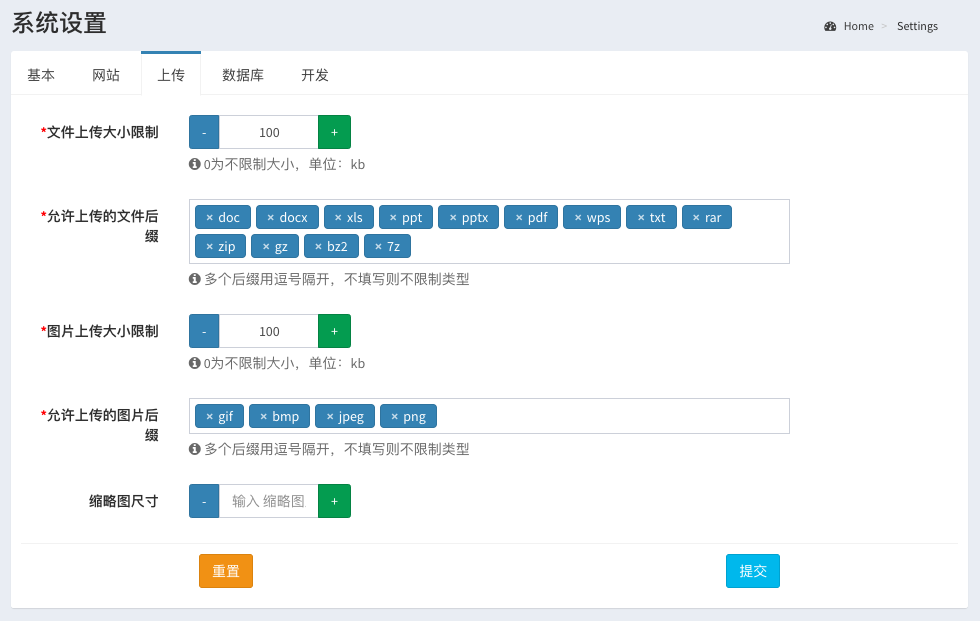

Since v1.7.0
数据表单用来构建表单和处理提交数据，可以很方便的来处理和Eloquent模型不相关的数据
用命令admin:form来生成表单类文件：
php artisan admin:form Setting --title=网站设置将会生成表单文件app/Admin/Forms/Setting.php
<?php
namespace App\Admin\Forms;
use Encore\Admin\Widgets\Form;
use Illuminate\Http\Request;
class Setting extends Form
{
/**
* The form title.
*
* @var string
*/
public $title = 'Settings';
/**
* Handle the form request.
*
* @param Request $request
*
* @return \Illuminate\Http\RedirectResponse
*/
public function handle(Request $request)
{
//dump($request->all());
admin_success('Processed successfully.');
return back();
}
/**
* Build a form here.
*/
public function form()
{
$this->text('name')->rules('required');
$this->email('email')->rules('email');
$this->datetime('created_at');
}
/**
* The data of the form.
*
* @return array $data
*/
public function data()
{
return [
'name' => 'John Doe',
'email' => 'John.Doe@gmail.com',
'created_at' => now(),
];
}
}
在上面的表单类里面，$title用来设置表单的标题，在form方法中来构建表单项，使用方法和model-form一致，data方法用来给这个表单项设置默认数据
然后按照下面的方法将上面的表单放到你的页面中：
<?php
use App\Admin\Forms\Setting;
use App\Http\Controllers\Controller;
use Encore\Admin\Layout\Content;
class UserController extends Controller
{
public function setting(Content $content)
{
return $content
->title('网站设置')
->body(new Setting());
}
}在页面中填入数据提交表单之后，请求会进入到handle方法中，在这里可以加入你的数据处理逻辑，处理完成之后，返回一个response对象给前端：
public function handle(Request $request)
{
// 从$request对象中获取数据来处理...
// 加入一个成功提示
admin_success('数据处理成功.');
// 或者一个错误提示
admin_success('数据处理成功失败.');
// 处理完成之后回到原来的表单页面，或者通过返回`redirect()`方法跳转到其它页面
return back();
}Since 1.8.0
在v1.8.*版本可以直接使用将表单注册路由，免去了创建控制器这一步
先将表单放在控制器目录中，app/Admin/Controllers/Setting.php，然后在app/Admin/routes.php中注册路由：
$router->get('form', Setting::class);在表单类中设置页面的标题和介绍：
class Setting extends Form
{
public $title = '页面标题';
public $description = '页面介绍';
}有一个比较常见的场景是提交表单之后，后端处理完数据，然后将结果放入session中：
public function handle(Request $request)
{
$result = 计算获得数据...
return back()->with(['result' => $result]);
}将数据$result返回并显示在页面中：
<?php
use App\Admin\Forms\Search;
use App\Http\Controllers\Controller;
use Encore\Admin\Layout\Content;
class UserController extends Controller
{
public function setting(Content $content)
{
$content
->title('查询')
->row(new Search());
// 如果有从后端返回的数据，那么从session中取出，显示在表单下面
if ($result = session('result')) {
$content->row('<pre>'.json_encode($result).'</pre>');
}
return $content;
}
}也可以用
withInput方法，对应old方法取出。
选项卡表单用选项卡的方式将多个表单组织起来，点击选项卡跳转到相应的表单页面
使用方法如下
use App\Admin\Forms\Settings;
use App\Http\Controllers\Controller;
use Encore\Admin\Layout\Content;
use Encore\Admin\Widgets\Tab;
class FormController extends Controller
{
public function settings(Content $content)
{
$forms = [
'basic' => Settings\Basic::class,
'site' => Settings\Site::class,
'upload' => Settings\Upload::class,
'database' => Settings\Database::class,
'develop' => Settings\Develop::class,
];
return $content
->title('系统设置')
->body(Tab::forms($forms));
}
}其中$forms为数据表单类数组，页面效果如下：

如果要把一个表单分成多个步骤来处理，可以使用步骤表单:
<?php
use App\Admin\Forms\Steps;
use App\Http\Controllers\Controller;
use Encore\Admin\Layout\Content;
use Encore\Admin\Widgets\MultipleSteps;
class FormController extends Controller
{
public function register(Content $content)
{
$steps = [
'info' => Steps\Info::class,
'profile' => Steps\Profile::class,
'password' => Steps\Password::class,
];
return $content
->title('注册用户')
->body(MultipleSteps::make($steps));
}
}第一个步骤表带类app/Admin/Forms/Steps/Info.php的代码如下：
<?php
namespace App\Admin\Forms\Steps;
use Encore\Admin\Widgets\StepForm;
use Illuminate\Http\Request;
class Info extends StepForm
{
/**
* The form title.
*
* @var string
*/
public $title = '填写基本信息';
/**
* Handle the form request.
*
* @param Request $request
*
* @return \Illuminate\Http\RedirectResponse
*/
public function handle(Request $request)
{
return $this->next($request->all());
}
/**
* Build a form here.
*/
public function form()
{
$this->text('username');
$this->email('email');
}
}注意在步骤表单继承的是
Encore\Admin\Widgets\StepForm类
在handle方法中, 有下面的一些方法可以帮助处理各种情况
使用next方法来保存当前这一步的数据到session中，并且跳转到下一步：
return $this->next($data = []);或者数据处理失败，回到上一步：
return $this->prev();在最后一步处理完数据后清空session中的数据：
return $this->clear();通过all方法获取之前的所有数据
return $this->all();